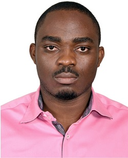
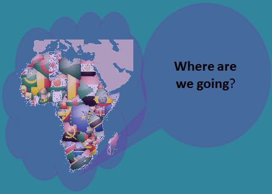

Cyrille Ateba


REFLECTING ON LEADERSHIP IN AFRICA
Chicago, IL
WHY LEADERSHIP?
There are several ways to live:
You live to spoil the resources you found on earth
You do not care about resources, you wish you weren't born
You strive to leave a better world
I contemplate that with the world population at 7 Billions today projected to be at 11 Billions by 2050, everyone has a role to play to leave a better world for the next generation
Why then does it seem so difficult for Africa to emerge?
The answer his questions is not obvious. However, I think Africa needs leaders that inspire ressources growth instead of destruction through self accumulation. When people get to live to leave a better place, they stop the endless and selfiss accumulation of resources, and start inspiring the community for good.
This will happen, when leaders understand the need for education, training talents to the right skills that will enable their own potential.
ABOUT ME
Education
MBA, Kellogg School of Management, June 2015
BS in Economics, University of YDEII, October 2004
Career
I spent several years in the private sector, enjoying a fast growing career in Operations Management, where I got exposed to senior leadership in several multinational companies, on projects that spanned the Globe.
Currently, I dedicate my time and energy to research on the leadership field, basically how to adapt what works so well in developped worlds esppecially the US, to a continent that is in need of leaders that can polish the very resources Africa is wasting today
Other activities
I dedicate time and resources helping raise awareness around sickle cell aneamia which affects 20% of the population in Sub Saharan Africa
Great soccer fan, I just happened to have learned the first rules of American football in view of conversion
Skills
- Operations Management
- Supply Chain
- Organization Design
- Leadership Coaching
Hobbies
I am conducting a new research on how Leadership will transform Africa from a continent in trouble into a megastar of the mid-21st century. If you would like to be part of this story, I welcome your contributions.
please see my mailing details above and reachout for further discussion